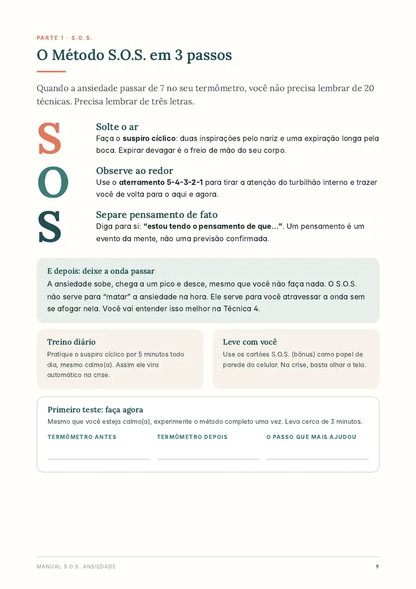
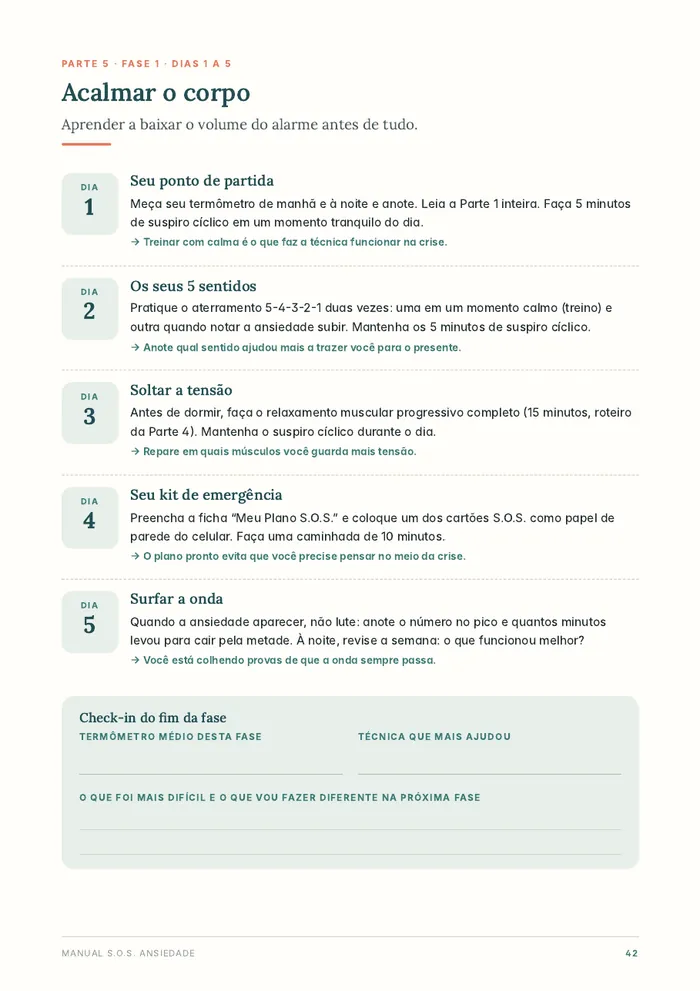
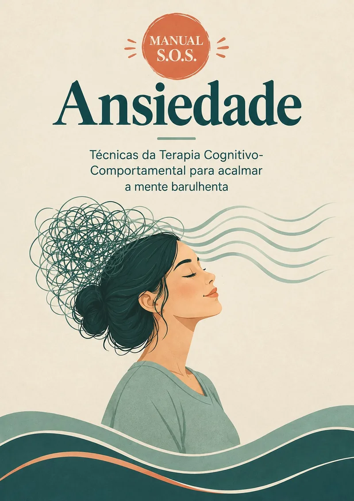
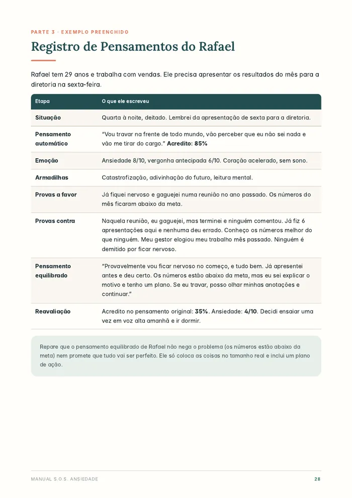
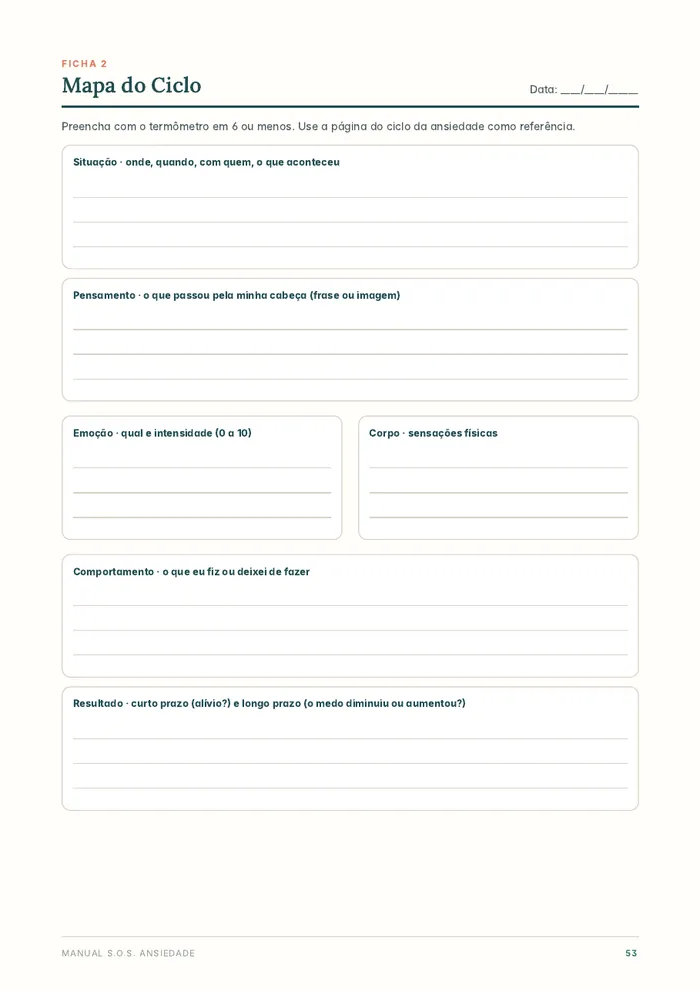

Mais controle quando a ansiedade aperta.
Técnicas simples, que os psicólogos usam, para acalmar o corpo na hora da crise, entender seus pensamentos e voltar a fazer o que a ansiedade tirou de você, com um plano guiado de 20 dias.
Quero acessar agora →


Quando a cabeça não desliga
A ansiedade não é frescura nem fraqueza. É um alarme do corpo que ficou sensível demais. E um alarme pode ser recalibrado.
Ferramentas para o corpo, os pensamentos e as atitudes
Tudo explicado de um jeito simples, com passo a passo e exemplos do dia a dia.
Método S.O.S.
Três passos de 1 a 5 minutos para atravessar o pico da ansiedade sem se afogar nele.
Entender o ciclo
Por que o coração dispara, de onde vêm as sensações e o que mantém a ansiedade girando.
Questionar pensamentos
As 10 armadilhas da mente ansiosa e como tirar a força dos pensamentos catastróficos.
Enfrentar aos poucos
A escada da exposição para voltar a fazer o que você vem evitando, um degrau por vez.
Corpo, café e sono
Relaxamento muscular, movimento e ajustes na rotina que tiram combustível da ansiedade.
Hora da preocupação
Uma técnica simples para a preocupação parar de invadir o dia inteiro.
Um plano de 20 dias, 10 a 20 minutos por dia
Você não precisa adivinhar por onde começar. O plano diz o que fazer em cada dia.
Acalmar o corpo
Aprender a baixar o volume do alarme com respiração, aterramento e relaxamento.
Entender e questionar
Enxergar o seu ciclo e tirar o poder dos pensamentos que exageram o perigo.
Enfrentar e consolidar
Voltar a fazer o que a ansiedade tirou de você e montar a sua rotina.
Bonito, organizado e fácil de seguir
60 páginas com passo a passo, exemplos preenchidos e espaço para você praticar.


Tudo o que você precisa para começar hoje
Manual S.O.S. Ansiedade
O guia completo em PDF, com linguagem simples e exemplos do dia a dia.
- 60 páginas de técnicas da TCC
- Método S.O.S. para a hora da crise
- Plano guiado de 20 dias
- Exemplos preenchidos
- 7 fichas para imprimir
Diário S.O.S. de 20 dias
O companheiro do plano: você sabe exatamente o que fazer em cada dia.
- Uma página para cada dia do plano
- A tarefa do dia já explicada
- Espaço para registrar o seu progresso
- Para usar no celular ou imprimir
4 cartões S.O.S. para o celular
Para ter as técnicas à mão na hora do aperto, sem precisar abrir o manual.
- 4 cartões no tamanho da tela
- Os passos do Método S.O.S. resumidos
- Use como papel de parede
- Na crise, é só olhar e seguir
Técnicas estudadas, não achismos
O manual reúne ferramentas da Terapia Cognitivo-Comportamental e de pesquisas científicas, citadas ao longo do material.
por dia de um exercício de respiração reduziram a ansiedade e melhoraram o humor em um estudo da Universidade Stanford.
Cell Reports Medicine, 2023com mais de 3.400 adultos mostraram que o relaxamento muscular progressivo ajuda a reduzir estresse e ansiedade.
Revisão sistemática, 2024científicas indicam que a atividade física reduz sintomas de ansiedade, depressão e estresse.
British Journal of Sports Medicine, 2023Manual S.O.S. Ansiedade + bônus
- Manual completo em PDF (60 páginas)
- Plano guiado de 20 dias
- 7 fichas para imprimir
- Bônus: Diário S.O.S. de 20 dias
- Bônus: 4 cartões S.O.S. para o celular
Pagamento único. Pix ou cartão. Você recebe tudo por e-mail logo após a compra.
Quero o meu manual agoraGarantia de 7 dias. Se não for o que você esperava, peça o reembolso dentro de 7 dias e devolvemos 100% do valor.
Perguntas e respostas
Para quem é este manual?
Para quem convive com preocupação excessiva, crises de ansiedade, cabeça que não desliga ou medo que faz evitar situações, e quer ferramentas práticas para o dia a dia.
O manual substitui terapia?
Não. É um material educativo e de autocuidado. Ele pode ser usado sozinho ou como complemento da terapia. Se a ansiedade estiver muito intensa ou atrapalhando muito a sua vida, procure um psicólogo ou médico. O manual mostra onde encontrar ajuda, inclusive gratuita.
Como eu recebo?
Logo após a confirmação do pagamento, você recebe por e-mail o acesso aos arquivos em PDF. Com Pix ou cartão, a liberação costuma ser imediata.
Consigo ler no celular?
Sim. O PDF abre no celular, tablet ou computador. As fichas e o diário também podem ser impressos.
Preciso ter algum diagnóstico?
Não. As técnicas ajudam qualquer pessoa que sofre com ansiedade, preocupação e estresse no dia a dia.
E se eu não gostar?
Você tem 7 dias de garantia. Se não for o que esperava, é só pedir o reembolso dentro desse prazo.
Comece hoje a acalmar a mente barulhenta
Técnicas para a hora do aperto, um plano de 20 dias e materiais para praticar. Tudo em PDF, com acesso imediato.
Quero o Manual S.O.S. →